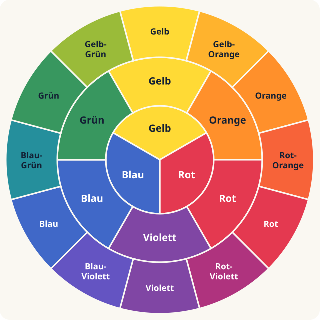
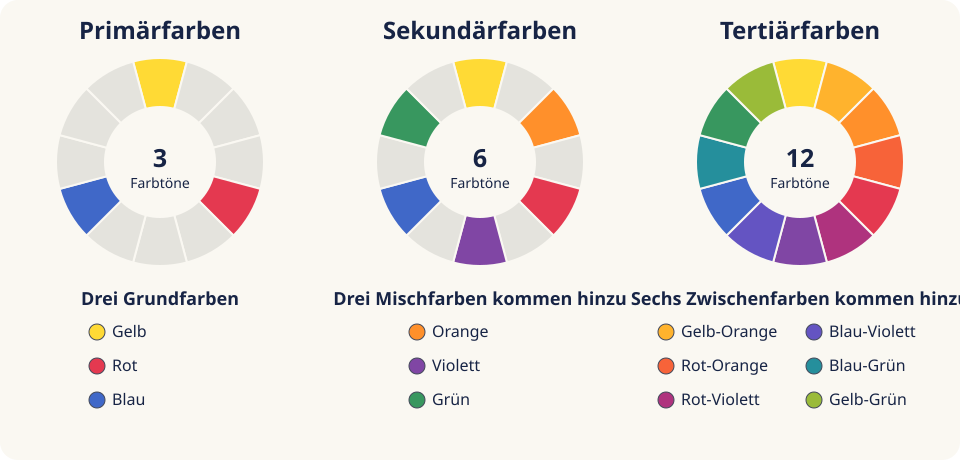

<!doctype html><html lang="de"><meta charset="utf-8"><meta name="viewport" content="width=device-width, initial-scale=1"><title>Farbduell · Farbatelier</title>
<style>
*{box-sizing:border-box}body{margin:0;background:#f6f4ed;color:#202841;font:1.1rem/1.55 system-ui,sans-serif}header,main{max-width:960px;margin:auto;padding:20px clamp(16px,4vw,40px)}header{display:flex;justify-content:space-between;align-items:center;border-bottom:1px solid #bcbdb7}a{color:inherit;font-weight:700}.brand{display:inline-flex;align-items:center;gap:10px;text-decoration:none}.wheel{display:inline-block;width:35px;height:35px;border-radius:50%;background:conic-gradient(#fbc744,#ee8847,#d74b64,#7754aa,#4181bc,#48906c,#fbc744)}h1,h2{line-height:1.1;letter-spacing:-.045em;margin:.25em 0 .45em}h1{font-size:clamp(3.6rem,10vw,7rem)}h2{font-size:clamp(1.8rem,5vw,3.2rem)}.hero{position:relative;isolation:isolate;overflow:hidden;background:#243150;color:white;padding:clamp(24px,5vw,50px);border-radius:22px;margin:18px 0}.hero:after{content:'';position:absolute;z-index:-1;right:-85px;top:-85px;width:300px;height:300px;border-radius:50%;background:repeating-conic-gradient(from 15deg,#ffcb53 0 30deg,#f18252 30deg 60deg,#ca505e 60deg 90deg,#9967af 90deg 120deg,#5689b1 120deg 150deg,#72a780 150deg 180deg);mask:radial-gradient(circle,transparent 36%,#000 36.5%)}.hero p{max-width:480px;margin:0}.hero>*{position:relative;z-index:1}.k{font-weight:750;letter-spacing:.1em;font-size:.84rem;text-transform:uppercase}.panel{background:#fff;border:1px solid #dadbd6;border-radius:20px;padding:clamp(20px,4vw,38px)}.opts,.answers{display:grid;grid-template-columns:repeat(2,minmax(0,1fr));gap:14px}label{display:grid;font-weight:650;gap:6px}button,select{font:inherit;color:inherit;border-radius:12px;padding:12px 16px;border:1px solid #a1a7b1;background:white;cursor:pointer}button:focus-visible,select:focus-visible,a:focus-visible{outline:4px solid #386dd0;outline-offset:3px}.go{background:#263652;color:white;border:0;font-weight:bold;margin:18px 0 0}.answers button{text-align:left;display:flex;align-items:center;gap:14px;min-height:84px;font-weight:650}.answers b{background:var(--c);color:#182136;border-radius:9px;padding:5px 12px}.answers button:hover{background:#f3f4fa}.row{display:flex;align-items:center;justify-content:space-between;gap:12px;flex-wrap:wrap}.muted{color:#505b70}progress{width:100%;height:9px;accent-color:#556e93}.summary{padding:12px 16px;background:#e9f1e9;border-radius:12px}.plain{border:0;background:none;text-decoration:underline;font-size:.95rem}.tag{font-weight:700}.error{background:#fff0e9}.review li{margin:.75em 0}.review span{display:block}.review{padding-left:22px}[hidden]{display:none!important}@media(max-width:650px){.opts,.answers{grid-template-columns:1fr}.hero:after{width:165px;height:165px;right:-83px;top:-75px}.answers button{min-height:60px}header{font-size:.9rem}}body.dark{background:#171d2a;color:#edeef2}.dark :is(.panel,button,select){background:#252e40;color:inherit}.dark .muted{color:#c2c8d6}.dark .answers button:hover{background:#374559}.dark .summary{background:#26443c}.dark .go{background:#ebcc82;color:#1a2435}.large-type{font-size:1.35rem}.large-type .k{font-size:1.05rem}.antwortbild{width:min(100%,12rem);min-width:0}.begruendung{display:flex;gap:1rem;flex-wrap:wrap;align-items:center}.begruendung svg{width:8rem;background:#faf8f3;border-radius:.7rem}.begruendung p{flex:1 1 15rem}.answers+details{margin-top:1rem}@media(prefers-reduced-motion:no-preference){.farbachse{stroke-dasharray:1;animation:achsenweg .65s ease-out}@keyframes achsenweg{from{stroke-dashoffset:1}to{stroke-dashoffset:0}}}
</style>
<header><a class="brand" href="index.html"><i class="wheel"></i>Farbatelier</a><span>Kunst · Klasse 5</span></header><main id="app"></main><aside style="max-width:900px;margin:0 auto;padding:0 16px"><details><summary>Kreis im Kreis ansehen</summary><figure style="margin:1.2rem 0"><h3>Kreis im Kreis</h3><a href="kreis-im-kreis.svg"></a><figcaption>Lies von innen nach außen: Orange liegt an der Grenze zwischen Gelb und Rot. Im äußeren Ring findest du auf der gelben Seite Gelb-Orange und auf der roten Seite Rot-Orange.</figcaption></figure></details><details><summary>Alle drei Farbkreise ansehen</summary><figure style="margin:1.2rem 0"><a href="drei-farbkreise.svg" aria-label="Schaubild mit allen drei Farbkreisen vergrößern"></a><figcaption>Gelb bleibt oben. Im zweiten Kreis liegt Orange zwischen Gelb und Rot. Im dritten kommt zwischen Gelb und Orange noch Gelb-Orange hinzu. Tippe zum Vergrößern auf das Bild.</figcaption></figure></details></aside><script src="speicher.js?v=1"></script><script src="farbwissen.js?v=gruen1"></script><script src="farbgrafik.js?v=1"></script><script src="farbfragen.js?v=2"></script><script src="farbduell.js?v=2"></script></html>
